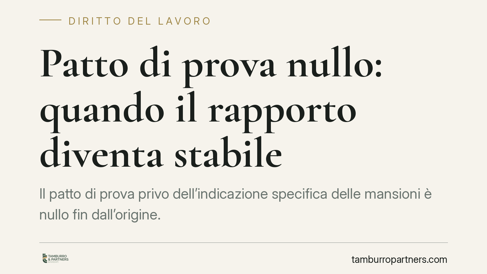

Patto di prova nullo: quando il rapporto diventa stabile
Il patto di prova privo dell'indicazione specifica delle mansioni è nullo fin dall'origine. Una recente pronuncia del Tribunale di Milano lo ribadisce: senza una clausola valida il rapporto si considera a tempo indeterminato dall'inizio. Vediamo perché accade, quali tutele spettano al lavoratore e come i datori possono redigere clausole che reggano a un eventuale contenzioso.

Il caso
Una lavoratrice contesta il recesso intimato durante il periodo di prova. Il patto, sostiene, non specificava le mansioni oggetto della verifica. Il Tribunale di Milano accoglie la domanda: la clausola è nulla per indeterminatezza dell'oggetto e, di conseguenza, il rapporto deve considerarsi a tempo indeterminato sin dalla costituzione.
Il principio non è nuovo, ma la pronuncia offre l'occasione per fare chiarezza su un errore ricorrente nella prassi contrattuale: la clausola di prova redatta in forma generica o per relationem, senza alcun ancoraggio alle concrete attività affidate.
Inquadramento normativo
Il patto di prova è disciplinato dall'art. 2096 del codice civile. La giurisprudenza, in modo ormai consolidato, richiede che la clausola indichi in modo specifico le mansioni oggetto della verifica. La ragione è funzionale: la prova serve a entrambe le parti per valutare la reciproca convenienza del rapporto, e questa valutazione presuppone che si sappia con precisione *su cosa* il lavoratore viene messo alla prova.
Un rinvio generico alla categoria o al livello di inquadramento non basta. Quando manca questa specificazione, il patto è nullo per indeterminatezza dell'oggetto.
Qui interviene l'art. 1419, comma 2, del codice civile: la nullità della singola clausola non travolge l'intero contratto, ma la clausola nulla è sostituita di diritto. In concreto, cade solo il patto di prova, mentre il rapporto di lavoro resta in piedi — ma depurato dal regime di libera recedibilità che la prova consentiva. Il rapporto, quindi, si consolida come ordinario rapporto a tempo indeterminato fin dall'inizio.
Implicazioni pratiche
La conseguenza principale è che il recesso intimato "in prova" perde il proprio fondamento. Non esistendo più una clausola valida che legittimi il recesso libero, il licenziamento va valutato secondo le regole ordinarie: deve cioè sorreggersi su una giusta causa o un giustificato motivo. In assenza, il recesso è illegittimo.
Quanto alle conseguenze del licenziamento illegittimo, occorre una precisazione importante. Il regime di tutela applicabile — reintegratorio o soltanto indennitario — dipende dalla disciplina applicabile al rapporto *ratione temporis* (in particolare se ricade nell'ambito del D.lgs. 23/2015 per gli assunti dal 7 marzo 2015) e dagli orientamenti giurisprudenziali, anche alla luce degli interventi della Corte costituzionale che negli ultimi anni hanno ampliato le ipotesi di reintegra. Non è quindi corretto affermare che la nullità del patto comporti automaticamente la reintegrazione: la tutela va verificata caso per caso. Ciò che è certo è il consolidamento del rapporto a tempo indeterminato.
Per il datore di lavoro il rischio è duplice: perdere la flessibilità del periodo di prova e dover gestire un rapporto stabile che riteneva ancora reversibile. Per il lavoratore, il tema è l'uso corretto degli strumenti di impugnazione, soggetti a termini di decadenza.
Cosa fare in concreto
- Datori di lavoro — verificate le clausole esistenti. Controllate che il patto di prova indichi le mansioni specifiche e non si limiti a richiamare categoria o livello contrattuale.
- Redigete la clausola con precisione. Descrivete in modo concreto le attività oggetto di verifica, coerenti con il profilo assunto. Un modello standard generico è il principale fattore di nullità.
- Lavoratori — rispettate i termini di impugnazione. Il licenziamento va impugnato per iscritto entro 60 giorni dalla comunicazione, con deposito del ricorso o attivazione della conciliazione entro i successivi 180 giorni. La decadenza preclude la tutela, anche quando il patto è nullo.
- Documentate il rapporto fin dall'inizio. Data di assunzione, mansioni effettive e durata della prova determinano sia la validità della clausola sia il regime di tutela applicabile.
- Consigliamo una valutazione preventiva. Prima di intimare un recesso "in prova" o di impugnarlo, verificate la tenuta della clausola: è su quel punto che spesso si decide l'esito del contenzioso.
---
Contributo informativo a cura di Tamburro & Partners – Avv. Giuseppe Tamburro. Non costituisce parere legale.
Ogni storia di lavoro ha i suoi tempi.
Se gestisci HR e vuoi un confronto su contenzioso, ispezioni o licenziamenti, scrivi allo studio. Ti rispondiamo entro un giorno lavorativo.